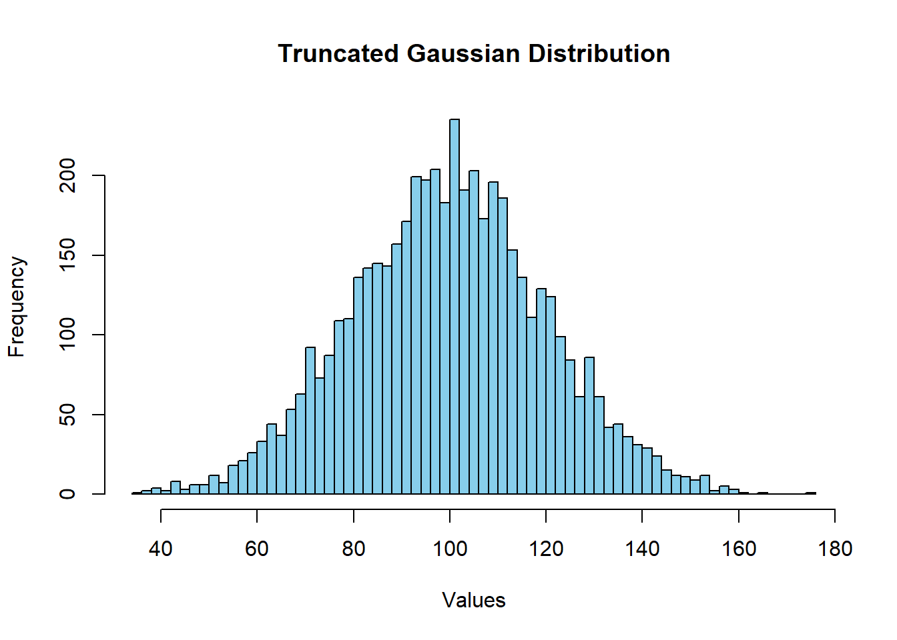
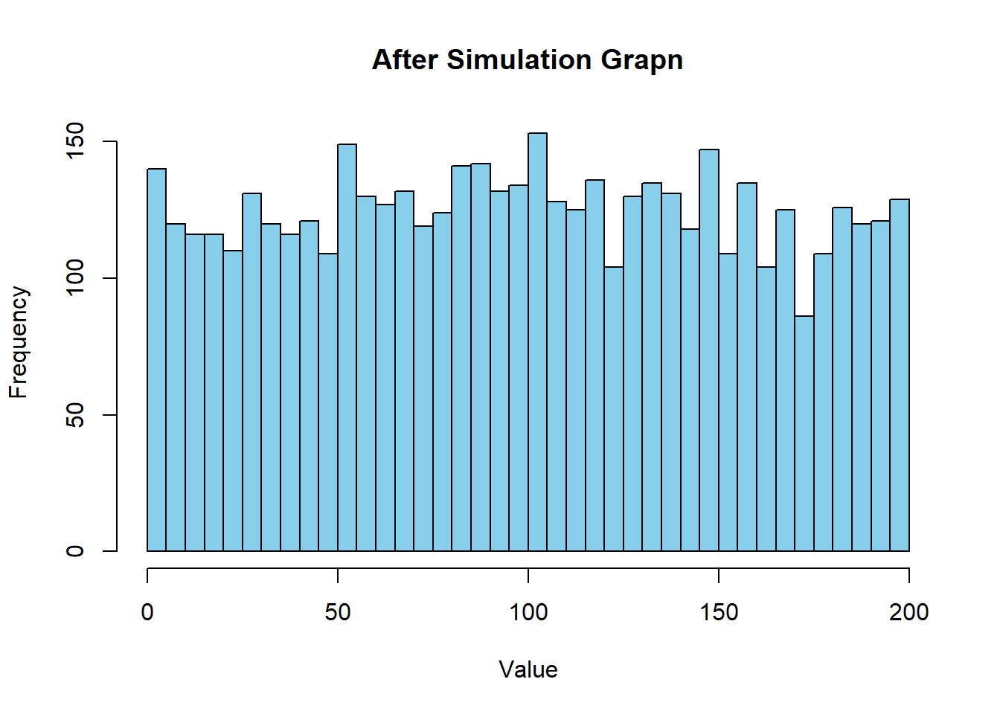
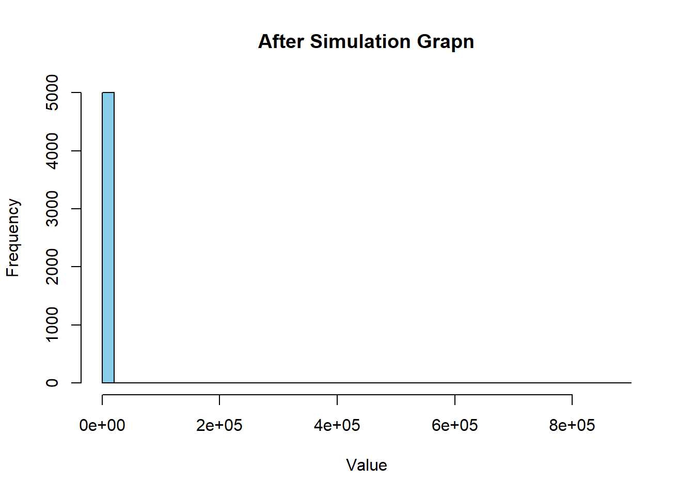

So I think this phenomena gets explained easily by one sentence:
“Winners can keep winning while losers cant lose everything.”
If you get more of the share for multiple times (since there are a lot of citizens there have to be people as well that “win” multiple times in a sucession. So some people get super lucky (as someone kinda “has” to be in a pool of 5000 people playing this game 10’000 rounds long). Which means a lot of money gets concentrated for those lucky streaks. Once your poor however, you dont have many chances to get rich as most other people get poorer too, so you mostly mingle with them when you are trading.
My theory could be tested by putting a limit on the winning amount. Lets test that
We are using a trunctuated normal distribution and set the max someone can get from a distribution to the double of the mean (=200). To have a value of 200 or above is already is crazy to achieve, as my code here explains mathematically:
Code
# Function to calculate the likelihood of a value being greater than a thresholdlikelihood_above_threshold<-function(mean, sd, threshold){# Use pnorm() to calculate the cumulative probability up to the thresholdprob_below_threshold<-pnorm(threshold, mean =mean, sd =sd)# Probability above the threshold is 1 minus the cumulative probabilityprob_above_threshold<-1-prob_below_thresholdreturn(prob_above_threshold)}# Example: Calculate the likelihood of wealth above 200 in a population with mean 100 and SD 20mean_wealth<-100sd_wealth<-20threshold<-200likelihood<-likelihood_above_threshold(mean_wealth, sd_wealth, threshold)print(likelihood)
[1] 2.866516e-07
installing packages truncnorm
Code
N<-5000# Population.MU<-100.# Mean of the Populationstd_dev<-MU/5# Standard deviationmin_limit<-0# Minimum valuemax_limit<-200# Maximum valuelibrary(truncnorm)population<-rtruncnorm(N, a =min_limit, b =max_limit, mean =MU, sd =std_dev)hist(population, breaks =50, main ="Truncated Gaussian Distribution", xlab ="Values", col ="skyblue")

Now its the same game as before,creating the simulation.
Code
round_population<-round(population)anyone<-function(round_population){sample(1:length(round_population), 2)}random_split<-function(x,y){# Sum them uppot<-x+y#how to sharepart1<-sample(0:pot, 1)#calcutlating the split part2<-pot-part1#adding the while loop after means that the parts have to be reshuffled at least once, else the while wouldnt get activatedwhile(part1>200||part2>200||(part1==0&&part2==0)){part1<-sample(0:pot, 1)# Randomly assign part1part2<-pot-part1# The remainder goes to part2}return(c(part1, part2))}simulation<-function(round_population,repetitions){for(iin1:repetitions){selected_people<-anyone(round_population)#getting the people for tradingperson1<-round_population[selected_people[1]]person2<-round_population[selected_people[2]]#making the new wealth distribution between those twonew_wealth<-random_split(person1, person2)#overwriting the old bank statement with the new oneround_population[selected_people[1]]<-new_wealth[1]round_population[selected_people[2]]<-new_wealth[2]}return(round_population)}repetitions<-10000final_population<-simulation(round_population, repetitions)hist(final_population, breaks =50, main ="After Simulation Grapn", xlab ="Value", col ="skyblue")

So I was right so far.
Lets see if this just needs more repetitions until its back to the old one, as it could just be that case. (It worked but rendering this takes super long Im sorry)
Code
simulation<-function(round_population,repetitions){for(iin1:repetitions){selected_people<-anyone(round_population)#getting the people for tradingperson1<-round_population[selected_people[1]]person2<-round_population[selected_people[2]]#making the new wealth distribution between those twonew_wealth<-random_split(person1, person2)#overwriting the old bank statement with the new oneround_population[selected_people[1]]<-new_wealth[1]round_population[selected_people[2]]<-new_wealth[2]}return(round_population)}repetitions<-100000#added one more zerofinal_population<-simulation(round_population, repetitions)hist(final_population, breaks =50, main ="After Simulation Grapn", xlab ="Value", col ="skyblue")
Still looks the same. So I was (probably) right. Maybe this also hints at some form of limitarianism we should implement in our political and societal system, like the (living!) philosopher and idol Ingrid Robeyns advocates for…
And if we even take into account how unlikely it is to even be in the top 200 based on luck, there would even be a case to lower that limit.
So I think that the way numbers work, small stays small and big stays big. The distribution also looks deceptively like one half of a gaussian distribution. So how about we test that too. We let the numbers go into the negative as well while keeping our premises of splitting the money.
So when two actors meet, they still can’t produce more money, but they can split it in a way, where someone gets left with debts, as long as both numbers add up to each other. However, we cant let total freedom reign this, as then abnormally high numbers could be produced (-1100 and 1300 still gives the initial 200 that used to be in the pot.) Additionally, we cant just propose an absolute value as then then the poor people could just come out of poverty by trading in a way that someone gets super rich and the other super poor, which also in the model before couldn’t be done. So we have to come up with a relative value where we avoid blatant fails like that. To better illustrate my idea that Im trying to convey we can imagine how a bank would go about this: a reasonable bank would not give a very rich and a very poor person the same amount of loans. The loans are relative to the income and wealth that people have.
So how do we come up with a relative, reasonable number? If we look at the graph, we can see that the cap of the richest people is around 800 (?) but the last few that are continous to each other caps at around 500. This means that the first necessary step to get to be super rich is around 250-400 (as these numbers times 2 means you get to be la creme de la creme). in mathematical terms Id describe the range of the negative to the positive values like this then:
- Max possible value with one trade: P1+P2+(P1+P2)/2
- Min possible value with one trade: -(P1+P2)/2
And in the end, there also has to be a maximum egative value for my limiting programming skills to match it, which is going to be -999. You can NEVER have less than -999 money.
Code
N<-5000# Population.MU<-100.# Mean of the Populationstd_dev<-MU/5# Standard deviationpopulation<-rnorm(N, mean =MU, sd =std_dev)round_population<-round(population)anyone<-function(round_population){population<-population+1000sample(0:2000, 2)population<-population-1000}random_split<-function(x,y){# Sum them uppot<-x+y+1000#how to sharepart1<-sample(0:pot, 1)part1<-part1-1000#calcutlating the split part2<-pot-part1pcf<--(part1+part2)/2while(part1<-1000||part2<-1000||(part1==0&&part2==0)){part1<-sample(0:pot, 1)# Randomly assign part1part1<-part1-1000part2<-pot-part1# The remainder goes to part2}return(c(part1, part2))while(part1<-1000||part2<-1000||(part1==0&&part2==0)){part1<-sample(0:pot, 1)# Randomly assign part1part1<-part1-1000part2<-pot-part1# The remainder goes to part2}return(c(part1, part2))}simulation<-function(round_population,repetitions){for(iin1:repetitions){selected_people<-anyone(round_population)#getting the people for tradingperson1<-round_population[selected_people[1]]person2<-round_population[selected_people[2]]#making the new wealth distribution between those twonew_wealth<-random_split(person1, person2)#overwriting the old bank statement with the new oneround_population[selected_people[1]]<-new_wealth[1]round_population[selected_people[2]]<-new_wealth[2]}return(round_population)}repetitions<-1000final_population<-simulation(round_population, repetitions)hist(final_population, breaks =50, main ="After Simulation Grapn", xlab ="Value", col ="skyblue")

Testing smaller versions to see where the mistake is
Code
random_split<-function(x,y){# Sum them uppot<-x+y#how to sharepart1<-sample(-1000:pot, 1)#calcutlating the split part2<-pot-part1pcf<--(part1+part2)/2while(part1<pcf||part2<pcf||(part1==0&&part2==0)){part1<-sample(-1000:pot, 1)# Randomly assign part1part2<-pot-part1# The remainder goes to part2}return(c(part1, part2))}random_split(100,100)
[1] -4 204
I meddled a lot, Ill try again.
New try
Code
anyone<-function(round_population){sample(round_population,2)#runif(1, min = -1000, max = 1000) }random_split<-function(x,y){# Sum them uppot<-x+y#how to sharepart1<-sample(-1000:pot, 1)#calcutlating the split part2<-pot-part1pcf<--(part1+part2)/2while(part1<pcf||part2<pcf||(part1==0&&part2==0)){part1<-sample(-1000:pot, 1)# Randomly assign part1part2<-pot-part1# The remainder goes to part2}return(c(part1, part2))}random_split(100,100)
[1] -65 265
Code
selected_people<-anyone(round_population)#getting the people for tradingperson1<-round_population[selected_people[1]]person2<-round_population[selected_people[2]]#making the new wealth distribution between those twonew_wealth<-random_split(person1, person2)#overwriting the old bank statement with the new oneround_population[selected_people[1]]<-new_wealth[1]round_population[selected_people[2]]<-new_wealth[2]
Big try:
Code
anyone<-function(round_population){sample(round_population,2)}random_split<-function(x,y){# Sum them upx_was_negative<-FALSEif(x<0){x<-2*xx_was_negative<-TRUE}if(y<0){y<-y*2}pot<-x+y#how to sharepart1<-sample(-1000:pot, 1)#calcutlating the split part2<-pot-part1pcf<--(part1+part2)/2while(part1<pcf||part2<pcf||(part1==0&&part2==0)){part1<-sample(-1000:pot, 1)# Randomly assign part1part2<-pot-part1# The remainder goes to part2}return(c(part1, part2))}random_split(100,100)simulation<-function(round_population,repetitions){for(iin1:repetitions){selected_people<-anyone(round_population)#getting the people for tradingperson1<-round_population[selected_people[1]]person2<-round_population[selected_people[2]]#making the new wealth distribution between those twonew_wealth<-random_split(person1, person2)#overwriting the old bank statement with the new oneround_population[selected_people[1]]<-new_wealth[1]round_population[selected_people[2]]<-new_wealth[2]}return(round_population)}repetitions<-10final_population<-simulation(round_population, repetitions)hist(final_population, breaks =50, main ="After Simulation Grapn", xlab ="Value", col ="skyblue")
Code
random_split<-function(x,y){# Sum them uppot<-x+y#how to sharepart1<-sample(-pot:pot, 1)#calcutlating the split part2<-pot-part1pcf<--abs(part1+part2)/2while(part1<pcf||part2<pcf||(part1==0&&part2==0)){part1<-sample(-pot:pot, 1)# Randomly assign part1part2<-pot-part1# The remainder goes to part2}return(c(part1, part2))}random_split(100,100)
[1] 71 129
I think I solved it now, there were many problems with numbers that were either the same, or when it was their negative part when adding them together. I first tried to add them to the pot but if it happens that x=100 and y = -100 then the pot is zero. So then I put the absolute value in, which would be 200 again. Then it could happen that if both have 100 then the difference is 0, making them lose 200 bucks.
(spoiler: I didnt solve it, trying it again with the code above) The code was doing it that if I put 100 and -80 the sum is 180 so the model split than one randomly, generating money in that process.
Now the problem is if both numbers cancel each other out, like 80 and -80. Here I just decided that if that is the case they just dont do anything.
Now Im also searching for indices, cuz chatgpt told me too (so I can avoid duplicates)
(I removed the zeros from the normal distribution to random 1s and -1s as its super inconveniant to calculate my stuffs with zeros) maybe a project for another time.
Code
N<-5000# Population.MU<-0# Mean of the Populationstd_dev<-20# Standard deviationpopulation<-rnorm(N, mean =MU, sd =std_dev)population[population==0]<-sample(c(-1, 1), length(population[population==0]), replace =TRUE)round_population<-round(population)anyone<-function(round_population){sample(seq_along(round_population), 2)}random_split<-function(x,y){# Sum them uppot<-x+y#how to sharepart1<-sample(-pot:pot, 1)#calcutlating the split part2<-pot-part1too_small<--abs(part1+part2)/2too_big<-part1+part2+(part1+part2)/2too_bigwhile(part1<too_small||part2<too_small||(part1==0&&part2==0)||(part1>too_big)||(part2>too_big)){part1<-sample(-pot:pot, 1)# Randomly assign part1part2<-pot-part1}return(c(part1, part2))}simulation<-function(round_population,repetitions){for(iin1:repetitions){selected_people<-anyone(round_population)#getting the people for tradingperson1<-round_population[selected_people[1]]person2<-round_population[selected_people[2]]while(person1==person2){selected_people<-anyone(round_population)#getting the people for tradingperson1<-round_population[selected_people[1]]person2<-round_population[selected_people[2]]}#making the new wealth distribution between those twonew_wealth<-random_split(person1, person2)#overwriting the old bank statement with the new oneround_population[selected_people[1]]<-new_wealth[1]round_population[selected_people[2]]<-new_wealth[2]}return(round_population)}repetitions<-10final_population<-simulation(round_population, repetitions)hist(final_population, breaks =50, main ="After Simulation Grapn", xlab ="Value", col ="skyblue")
ffndsafjaewklnfdsad I DID IT HELL YES IM SO HAPPY WHAT THE HELL I HAVE BEEN UPDATING THIS CODE NOW PROBS FOR 5 HOURS ONLY AND I GO TIT KFDNHSALFJDJKLÖADSLKNDFSNAKLNKLIHO
Danke Paul dass mer ned uf de Autobahn verunfallt sind (er isch eus heigfahre). Danke Amy fürd unterhaltig vom paul (dass er ned ihschlaft) & das er überlebt (amy het ihm wasser geh). Larissa het gueti Musig gmacht. Und danke Thomas dass er eh paar stunde ned nervig gsi isch.
down here is my notepad
Code
random_split<-function(x,y){# Sum them uppot<-x+y#how to sharepart1<-sample(-pot:pot, 1)#calcutlating the split part2<-pot-part1too_small<--abs(part1+part2)/2too_big<-part1+part2+(part1+part2)/2too_big}random_split(100,100)
[1] 300
Code
N<-5000# Population.MU<-0# Mean of the Populationstd_dev<-20# Standard deviationpopulation<-rnorm(N, mean =MU, sd =std_dev)population[population==0]<-sample(c(-1, 1), length(population[population==0]), replace =TRUE)round_population<-round(population)anyone<-function(round_population){sample(seq_along(round_population), 2)}random_split<-function(x, y){pot<-x+y# Ensuring no 0s and reasonable splitspart1<-sample(max(-pot+1, -100):min(pot-1, 100), 1)part2<-pot-part1too_small<--abs(part1+part2)/2too_big<-part1+part2+(part1+part2)/2while(part1<too_small||part2<too_small||(part1>too_big)||(part2>too_big)){part1<-sample(max(-pot+1, -100):min(pot-1, 100), 1)# Avoiding zeropart2<-pot-part1}return(c(part1, part2))}simulation<-function(round_population, repetitions){for(iin1:repetitions){selected_people<-anyone(round_population)person1<-round_population[selected_people[1]]person2<-round_population[selected_people[2]]# Ensure two different peoplewhile(selected_people[1]==selected_people[2]){selected_people<-anyone(round_population)person1<-round_population[selected_people[1]]person2<-round_population[selected_people[2]]}new_wealth<-random_split(person1, person2)# Update the populationround_population[selected_people[1]]<-new_wealth[1]round_population[selected_people[2]]<-new_wealth[2]}return(round_population)}repetitions<-10final_population<-simulation(round_population, repetitions)hist(final_population, breaks =50, main ="After Simulation Grapn", xlab ="Value", col ="skyblue")
Code
N<-5000# Population.MU<-0# Mean of the Populationstd_dev<-20# Standard deviationpopulation<-rnorm(N, mean =MU, sd =std_dev)population[population==0]<-sample(c(-1, 1), length(population[population==0]), replace =TRUE)round_population<-round(population)anyone<-function(round_population){sample(seq_along(round_population), 2)}anyone(round_population)
[1] 671 3704
Code
random_split<-function(x,y){# Sum them uppot<-x+yif(pot==0){pot<-x}#how to sharepart1<-sample(-pot:pot, 1)#calcutlating the split part2<-pot-part1too_small<--abs(part1+part2)/2too_big<-part1+part2+(part1+part2)/2too_bigwhile(part1<too_small||part2<too_small||(part1==0&&part2==0)||(part1>too_big)||(part2>too_big)){part1<-sample(-pot:pot, 1)# Randomly assign part1part2<-pot-part1}return(c(part1, part2))}random_split(50,-50)
[1] 26 24
Code
simulation<-function(x,y){for(iin1:y){selected_people<-anyone(x)#getting the people for tradingperson1<-round_population[selected_people[1]]person2<-round_population[selected_people[2]]#making the new wealth distribution between those twonew_wealth<-random_split(person1, person2)#overwriting the old bank statement with the new oneround_population[selected_people[1]]<-new_wealth[1]round_population[selected_people[2]]<-new_wealth[2]}return(round_population)}repetitions<-10#final_population <- simulation(round_population, repetitions)#final_populationhist(round_population, breaks =50, main ="After Simulation Grapn", xlab ="Value", col ="skyblue")
---title: "Assignment 2.1"author: "Thomas Walker"---This is for the second part of the assignment.So I think this phenomena gets explained easily by one sentence:"Winners can keep winning while losers cant lose everything."If you get more of the share for multiple times (since there are a lot of citizens there have to be people as well that "win" multiple times in a sucession. So some people get super lucky (as someone kinda "has" to be in a pool of 5000 people playing this game 10'000 rounds long). Which means a lot of money gets concentrated for those lucky streaks. Once your poor however, you dont have many chances to get rich as most other people get poorer too, so you mostly mingle with them when you are trading.My theory could be tested by putting a limit on the winning amount. Lets test thatWe are using a trunctuated normal distribution and set the max someone can get from a distribution to the double of the mean (=200). To have a value of 200 or above is already is crazy to achieve, as my code here explains mathematically:```{r}# Function to calculate the likelihood of a value being greater than a thresholdlikelihood_above_threshold <-function(mean, sd, threshold) {# Use pnorm() to calculate the cumulative probability up to the threshold prob_below_threshold <-pnorm(threshold, mean = mean, sd = sd)# Probability above the threshold is 1 minus the cumulative probability prob_above_threshold <-1- prob_below_thresholdreturn(prob_above_threshold)}# Example: Calculate the likelihood of wealth above 200 in a population with mean 100 and SD 20mean_wealth <-100sd_wealth <-20threshold <-200likelihood <-likelihood_above_threshold(mean_wealth, sd_wealth, threshold)print(likelihood)```installing packages truncnorm```{r}N <-5000# Population.MU <-100.# Mean of the Populationstd_dev <- MU/5# Standard deviationmin_limit <-0# Minimum valuemax_limit <-200# Maximum valuelibrary(truncnorm)population <-rtruncnorm(N, a = min_limit, b = max_limit, mean = MU, sd = std_dev)hist(population, breaks =50, main ="Truncated Gaussian Distribution", xlab ="Values", col ="skyblue")```Now its the same game as before,creating the simulation.```{r}round_population <-round(population)anyone <-function(round_population){sample(1:length(round_population), 2)}random_split <-function(x,y) {# Sum them up pot <- x+y#how to share part1 <-sample(0:pot, 1)#calcutlating the split part2 <- pot - part1#adding the while loop after means that the parts have to be reshuffled at least once, else the while wouldnt get activatedwhile (part1 >200|| part2 >200|| (part1 ==0&& part2 ==0)) { part1 <-sample(0:pot, 1) # Randomly assign part1 part2 <- pot - part1 # The remainder goes to part2 }return(c(part1, part2))}simulation <-function(round_population,repetitions) {for (i in1:repetitions) { selected_people <-anyone(round_population)#getting the people for trading person1 <- round_population[selected_people[1]] person2 <- round_population[selected_people[2]]#making the new wealth distribution between those two new_wealth <-random_split(person1, person2)#overwriting the old bank statement with the new one round_population[selected_people[1]] <- new_wealth[1] round_population[selected_people[2]] <- new_wealth[2] }return(round_population)}repetitions <-10000final_population <-simulation(round_population, repetitions)hist(final_population, breaks =50, main ="After Simulation Grapn", xlab ="Value", col ="skyblue")```So I was right so far.Lets see if this just needs more repetitions until its back to the old one, as it could just be that case. (It worked but rendering this takes super long Im sorry)```{r, eval=FALSE}simulation <- function(round_population,repetitions) { for (i in 1:repetitions) { selected_people <- anyone(round_population) #getting the people for trading person1 <- round_population[selected_people[1]] person2 <- round_population[selected_people[2]] #making the new wealth distribution between those two new_wealth <- random_split(person1, person2) #overwriting the old bank statement with the new one round_population[selected_people[1]] <- new_wealth[1] round_population[selected_people[2]] <- new_wealth[2] } return(round_population)}repetitions <- 100000 #added one more zerofinal_population <- simulation(round_population, repetitions)hist(final_population, breaks = 50, main = "After Simulation Grapn", xlab = "Value", col = "skyblue")```Still looks the same. So I was (probably) right. Maybe this also hints at some form of limitarianism we should implement in our political and societal system, like the (living!) philosopher and idol Ingrid Robeyns advocates for...And if we even take into account how unlikely it is to even be in the top 200 based on luck, there would even be a case to lower that limit.------------------------------------------------------------------------So I think that the way numbers work, small stays small and big stays big. The distribution also looks deceptively like one half of a gaussian distribution. So how about we test that too. We let the numbers go into the negative as well while keeping our premises of splitting the money.So when two actors meet, they still can't produce more money, but they can split it in a way, where someone gets left with debts, as long as both numbers add up to each other. However, we cant let total freedom reign this, as then abnormally high numbers could be produced (-1100 and 1300 still gives the initial 200 that used to be in the pot.) Additionally, we cant just propose an absolute value as then then the poor people could just come out of poverty by trading in a way that someone gets super rich and the other super poor, which also in the model before couldn't be done. So we have to come up with a relative value where we avoid blatant fails like that. To better illustrate my idea that Im trying to convey we can imagine how a bank would go about this: a reasonable bank would not give a very rich and a very poor person the same amount of loans. The loans are relative to the income and wealth that people have.So how do we come up with a relative, reasonable number? If we look at the graph, we can see that the cap of the richest people is around 800 (?) but the last few that are continous to each other caps at around 500. This means that the first necessary step to get to be super rich is around 250-400 (as these numbers times 2 means you get to be la creme de la creme). in mathematical terms Id describe the range of the negative to the positive values like this then:\- Max possible value with one trade: P1+P2+(P1+P2)/2\- Min possible value with one trade: -(P1+P2)/2And in the end, there also has to be a maximum egative value for my limiting programming skills to match it, which is going to be -999. You can NEVER have less than -999 money.```{r}N <-5000# Population.MU <-100.# Mean of the Populationstd_dev <- MU/5# Standard deviationpopulation <-rnorm(N, mean = MU, sd = std_dev)round_population <-round(population)anyone <-function(round_population){ population <- population +1000sample(0:2000, 2) population <- population -1000}random_split <-function(x,y) {# Sum them up pot <- x+y+1000#how to share part1 <-sample(0:pot, 1) part1 <- part1-1000#calcutlating the split part2 <- pot - part1 pcf <--(part1+part2)/2while (part1 <-1000|| part2 <-1000|| (part1 ==0&& part2 ==0)) { part1 <-sample(0:pot, 1)# Randomly assign part1 part1 <- part1-1000 part2 <- pot - part1 # The remainder goes to part2 }return(c(part1, part2))while (part1 <-1000|| part2 <-1000|| (part1 ==0&& part2 ==0)) { part1 <-sample(0:pot, 1)# Randomly assign part1 part1 <- part1-1000 part2 <- pot - part1 # The remainder goes to part2 }return(c(part1, part2))}simulation <-function(round_population,repetitions) {for (i in1:repetitions) { selected_people <-anyone(round_population)#getting the people for trading person1 <- round_population[selected_people[1]] person2 <- round_population[selected_people[2]]#making the new wealth distribution between those two new_wealth <-random_split(person1, person2)#overwriting the old bank statement with the new one round_population[selected_people[1]] <- new_wealth[1] round_population[selected_people[2]] <- new_wealth[2] }return(round_population)}repetitions <-1000final_population <-simulation(round_population, repetitions)hist(final_population, breaks =50, main ="After Simulation Grapn", xlab ="Value", col ="skyblue")```Testing smaller versions to see where the mistake is```{r}random_split <-function(x,y) {# Sum them up pot <- x+y#how to share part1 <-sample(-1000:pot, 1)#calcutlating the split part2 <- pot - part1 pcf <--(part1+part2)/2while (part1 < pcf || part2 < pcf || (part1 ==0&& part2 ==0)) { part1 <-sample(-1000:pot, 1) # Randomly assign part1 part2 <- pot - part1 # The remainder goes to part2 }return(c(part1, part2))}random_split(100,100)```I meddled a lot, Ill try again.New try```{r}anyone <-function(round_population){sample(round_population,2)#runif(1, min = -1000, max = 1000) }random_split <-function(x,y) {# Sum them up pot <- x+y#how to share part1 <-sample(-1000:pot, 1)#calcutlating the split part2 <- pot - part1 pcf <--(part1+part2)/2while (part1 < pcf || part2 < pcf || (part1 ==0&& part2 ==0)) { part1 <-sample(-1000:pot, 1) # Randomly assign part1 part2 <- pot - part1 # The remainder goes to part2 }return(c(part1, part2))}random_split(100,100)selected_people <-anyone(round_population) #getting the people for tradingperson1 <- round_population[selected_people[1]]person2 <- round_population[selected_people[2]]#making the new wealth distribution between those twonew_wealth <-random_split(person1, person2)#overwriting the old bank statement with the new oneround_population[selected_people[1]] <- new_wealth[1]round_population[selected_people[2]] <- new_wealth[2]```Big try:```{r, eval=FALSE}anyone <- function(round_population){ sample(round_population,2)}random_split <- function(x,y) { # Sum them up x_was_negative <- FALSE if (x<0){ x<-2*x x_was_negative <- TRUE } if (y<0){ y <- y*2 } pot <- x+y #how to share part1 <- sample(-1000:pot, 1) #calcutlating the split part2 <- pot - part1 pcf <- -(part1+part2)/2 while (part1 < pcf || part2 < pcf || (part1 == 0 && part2 == 0)) { part1 <- sample(-1000:pot, 1) # Randomly assign part1 part2 <- pot - part1 # The remainder goes to part2 } return(c(part1, part2))}random_split(100,100)simulation <- function(round_population,repetitions) { for (i in 1:repetitions) { selected_people <- anyone(round_population) #getting the people for trading person1 <- round_population[selected_people[1]] person2 <- round_population[selected_people[2]] #making the new wealth distribution between those two new_wealth <- random_split(person1, person2) #overwriting the old bank statement with the new one round_population[selected_people[1]] <- new_wealth[1] round_population[selected_people[2]] <- new_wealth[2] } return(round_population)}repetitions <- 10final_population <- simulation(round_population, repetitions)hist(final_population, breaks = 50, main = "After Simulation Grapn", xlab = "Value", col = "skyblue")``````{r}random_split <-function(x,y) {# Sum them up pot <- x+y#how to share part1 <-sample(-pot:pot, 1)#calcutlating the split part2 <- pot - part1 pcf <--abs(part1+part2)/2while (part1 < pcf || part2 < pcf || (part1 ==0&& part2 ==0)) { part1 <-sample(-pot:pot, 1) # Randomly assign part1 part2 <- pot - part1 # The remainder goes to part2 }return(c(part1, part2))}random_split(100,100)```I think I solved it now, there were many problems with numbers that were either the same, or when it was their negative part when adding them together. I first tried to add them to the pot but if it happens that x=100 and y = -100 then the pot is zero. So then I put the absolute value in, which would be 200 again. Then it could happen that if both have 100 then the difference is 0, making them lose 200 bucks.(spoiler: I didnt solve it, trying it again with the code above) The code was doing it that if I put 100 and -80 the sum is 180 so the model split than one randomly, generating money in that process.Now the problem is if both numbers cancel each other out, like 80 and -80. Here I just decided that if that is the case they just dont do anything.Now Im also searching for indices, cuz chatgpt told me too (so I can avoid duplicates)(I removed the zeros from the normal distribution to random 1s and -1s as its super inconveniant to calculate my stuffs with zeros) maybe a project for another time.```{r, eval=FALSE}N <- 5000 # Population.MU <- 0 # Mean of the Populationstd_dev <- 20 # Standard deviationpopulation <- rnorm(N, mean = MU, sd = std_dev)population[population == 0] <- sample(c(-1, 1), length(population[population == 0]), replace = TRUE)round_population <- round(population)anyone <- function(round_population){ sample(seq_along(round_population), 2)}random_split <- function(x,y){ # Sum them up pot <- x+y #how to share part1 <- sample(-pot:pot, 1) #calcutlating the split part2 <- pot - part1 too_small <- -abs(part1 + part2) / 2 too_big <- part1 + part2 + (part1+part2) / 2 too_big while (part1 < too_small || part2 < too_small || (part1 == 0 && part2 == 0) || (part1 > too_big) || (part2 > too_big)) { part1 <- sample(-pot:pot, 1) # Randomly assign part1 part2 <- pot - part1 } return(c(part1, part2))}simulation <- function(round_population,repetitions) { for (i in 1:repetitions) { selected_people <- anyone(round_population) #getting the people for trading person1 <- round_population[selected_people[1]] person2 <- round_population[selected_people[2]] while(person1 == person2){ selected_people <- anyone(round_population) #getting the people for trading person1 <- round_population[selected_people[1]] person2 <- round_population[selected_people[2]] } #making the new wealth distribution between those two new_wealth <- random_split(person1, person2) #overwriting the old bank statement with the new one round_population[selected_people[1]] <- new_wealth[1] round_population[selected_people[2]] <- new_wealth[2] } return(round_population)}repetitions <- 10final_population <- simulation(round_population, repetitions)hist(final_population, breaks = 50, main = "After Simulation Grapn", xlab = "Value", col = "skyblue")```ffndsafjaewklnfdsad I DID IT HELL YES IM SO HAPPY WHAT THE HELL I HAVE BEEN UPDATING THIS CODE NOW PROBS FOR 5 HOURS ONLY AND I GO TIT KFDNHSALFJDJKLÖADSLKNDFSNAKLNKLIHODanke Paul dass mer ned uf de Autobahn verunfallt sind (er isch eus heigfahre). Danke Amy fürd unterhaltig vom paul (dass er ned ihschlaft) & das er überlebt (amy het ihm wasser geh). Larissa het gueti Musig gmacht. Und danke Thomas dass er eh paar stunde ned nervig gsi isch.down here is my notepad```{r}random_split <-function(x,y) {# Sum them up pot <- x+y#how to share part1 <-sample(-pot:pot, 1)#calcutlating the split part2 <- pot - part1 too_small <--abs(part1+part2)/2 too_big <- part1+part2+(part1+part2)/2 too_big}random_split(100,100)``````{r, eval=FALSE}N <- 5000 # Population.MU <- 0 # Mean of the Populationstd_dev <- 20 # Standard deviationpopulation <- rnorm(N, mean = MU, sd = std_dev)population[population == 0] <- sample(c(-1, 1), length(population[population == 0]), replace = TRUE)round_population <- round(population)anyone <- function(round_population){ sample(seq_along(round_population), 2)}random_split <- function(x, y) { pot <- x + y # Ensuring no 0s and reasonable splits part1 <- sample(max(-pot + 1, -100):min(pot - 1, 100), 1) part2 <- pot - part1 too_small <- -abs(part1 + part2) / 2 too_big <- part1 + part2 + (part1 + part2) / 2 while (part1 < too_small || part2 < too_small || (part1 > too_big) || (part2 > too_big)) { part1 <- sample(max(-pot + 1, -100):min(pot - 1, 100), 1) # Avoiding zero part2 <- pot - part1 } return(c(part1, part2))}simulation <- function(round_population, repetitions) { for (i in 1:repetitions) { selected_people <- anyone(round_population) person1 <- round_population[selected_people[1]] person2 <- round_population[selected_people[2]] # Ensure two different people while (selected_people[1] == selected_people[2]) { selected_people <- anyone(round_population) person1 <- round_population[selected_people[1]] person2 <- round_population[selected_people[2]] } new_wealth <- random_split(person1, person2) # Update the population round_population[selected_people[1]] <- new_wealth[1] round_population[selected_people[2]] <- new_wealth[2] } return(round_population)}repetitions <- 10final_population <- simulation(round_population, repetitions)hist(final_population, breaks = 50, main = "After Simulation Grapn", xlab = "Value", col = "skyblue")``````{r}N <-5000# Population.MU <-0# Mean of the Populationstd_dev <-20# Standard deviationpopulation <-rnorm(N, mean = MU, sd = std_dev)population[population ==0] <-sample(c(-1, 1), length(population[population ==0]), replace =TRUE)round_population <-round(population)anyone <-function(round_population){sample(seq_along(round_population), 2)}anyone(round_population)random_split <-function(x,y){# Sum them up pot <- x+yif(pot ==0){ pot <- x }#how to share part1 <-sample(-pot:pot, 1)#calcutlating the split part2 <- pot - part1 too_small <--abs(part1 + part2) /2 too_big <- part1 + part2 + (part1+part2) /2 too_bigwhile (part1 < too_small || part2 < too_small || (part1 ==0&& part2 ==0) || (part1 > too_big) || (part2 > too_big)) { part1 <-sample(-pot:pot, 1) # Randomly assign part1 part2 <- pot - part1 }return(c(part1, part2))}random_split(50,-50)simulation <-function(x,y) {for (i in1:y) { selected_people <-anyone(x)#getting the people for trading person1 <- round_population[selected_people[1]] person2 <- round_population[selected_people[2]]#making the new wealth distribution between those two new_wealth <-random_split(person1, person2)#overwriting the old bank statement with the new one round_population[selected_people[1]] <- new_wealth[1] round_population[selected_people[2]] <- new_wealth[2] }return(round_population)}repetitions <-10#final_population <- simulation(round_population, repetitions)#final_populationhist(round_population, breaks =50, main ="After Simulation Grapn", xlab ="Value", col ="skyblue")```I got a new idea, for this I need a new page